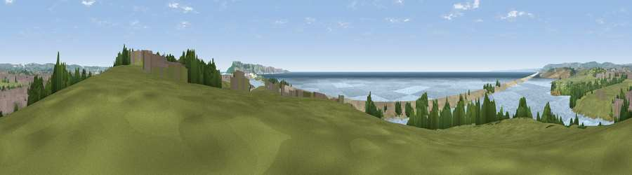

Viewpoint near Wyke Regis
#8758 in England · top 27% of its area beats it · near Wyke Regis · path 161 mWhere it is
The exact computed spot (SY 65075 77825). Click the marker for map links.
Public access: the nearest public right of way is about 161 m away — the final stretch may cross private land. Computed from Natural England's CRoW access layer and OpenStreetMap rights of way — not the legal definitive map. Always verify locally.
The view, rendered

A 360° render of this exact spot computed from the terrain model, tree cover and land cover — summer colours, afternoon light, calibrated against photographs of famous viewpoints. Real trees, hedges and buildings will differ in detail.
The panorama
Grey silhouette: terrain skyline in each direction (720 bearings, Earth curvature and refraction included). Dashed green: skyline with trees (+15 m) and buildings (+8 m) as obstacles. Blue strip: how far the ground is visible on each bearing.
Where the view opens
Wedge length = distance to the farthest visible ground on that bearing (vegetation-aware). Rings at 10, 25 and 50 km.
What fills the view
45% water · 27% grassland · 10% built-up · 9% bare ground · 7% woodland · 2% cropland
Angular shares of the visible panorama (visual magnitude), not map area. Landscape diversity 0.62 (0–1 Shannon).
Key numbers
More beautiful places nearby
The staircase of upgrades: each row has a higher view potential than everything closer. Driving times are estimates from straight-line distance, calibrated against real road routing — check an actual route before setting out.
| Place | Direction | Drive | Score |
|---|---|---|---|
| Viewpoint near Fleet | NW · 4 km | ~9 min | 71.0 |
| Viewpoint near Fleet | NW · 4 km | ~9 min | 71.6 |
| Viewpoint near Castletown | SE · 6 km | ~12 min | 81.2 |
| Viewpoint near Portesham | NNW · 11 km | ~20 min | 82.7 |
| Viewpoint near Abbotsbury | NW · 12 km | ~22 min | 83.8 |
| Viewpoint near Abbotsbury | NW · 12 km | ~22 min | 85.1 |
| Viewpoint near Abbotsbury | NW · 12 km | ~23 min | 89.0 |
| Viewpoint near West Bexington | NW · 14 km | ~25 min | 89.5 |
50.59910, -2.49483 · source: screening · position refined by local search. Computed location — check access rights before visiting.